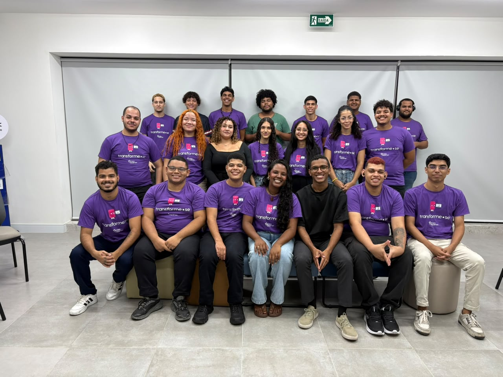
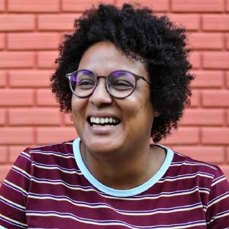

TRANSFORME-SE · SENAC × SERASA
Ideias ganham forma.
Um portfólio vivo da Turma 125: projetos, experiências, aprendizados e tudo aquilo que construímos durante nossa jornada.

02 / QUEM SOMOS
Uma turma.
Várias ideias.
Somos a Turma 125 do Transforme-se, formação em desenvolvimento front-end fruto de uma parceria entre o Senac e o Serasa.
Este portfólio reúne nossos projetos, aprendizados, experiências e momentos construídos durante essa jornada.
BASTIDORES
Por trás das cenas.
Galeria de bastidores da Turma 125 com fotografias e vídeos de momentos de aprendizagem, trabalho em equipe, apresentações e convivência.
03 / NOSSA JORNADA
Por onde
passamos.

NOSSA MESTRA / 202604 / NOSSA MESTRA
Professora
Anicely
E, ao falar da nossa trajetória, existe uma pessoa que se tornou parte essencial dela: a professora Anicely.
Ela nos incentivava a questionar, pensar, criar, experimentar e, principalmente, encontrar nossas próprias respostas.
05 / PROJETOS
O que
criamos.
Projetos, MVPs e jogos desenvolvidos ao longo da formação.
06 / EQUIPE
Quem está
por trás.
Conheça as pessoas que transformam ideias em resultados.